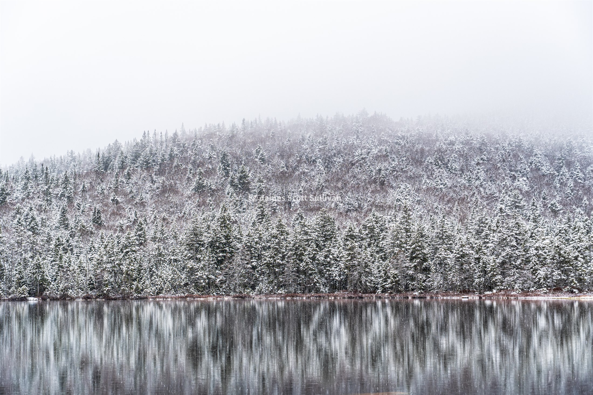

Flagship chapter
The World Is Big
Glacier, ancient cedars, ferries, and the chapter where movement itself became the point.
New England based / usually outside / camera nearby
Photography as memory, movement, and place. Road trip chapters, mountain days, print-worthy frames, and the field notes that keep the trip from flattening out once I am home again.
Field Notes
Click a frame to open the field note, chapter, or hike. The road trip is live through Chapter 4, the Presidential Traverse is up, and the NH48 thread has started.
From The Work
Strong frames from the portfolio, the print edit, and the field notes, moving past each other the way the trip did.
Field notes
Road Trip is live through Chapter 4. North Kinsman kicked off the NH48 thread. The Presidential Traverse is up. The prints and the portfolio keep feeding the writing back into the frames.
Flagship chapter
Glacier, ancient cedars, ferries, and the chapter where movement itself became the point.
Mountain day
Fishin Jimmy, a fool's spring, and the kind of turnaround that earns its keep.
Print connection
Fools Spring, Ilya Peak, and the quieter side of the site where the photographs get to stay put.

Fools Spring / White Mountains
The same site thread, just slowed down into a print.
Prints
A few frames carry enough story to deserve a wall.